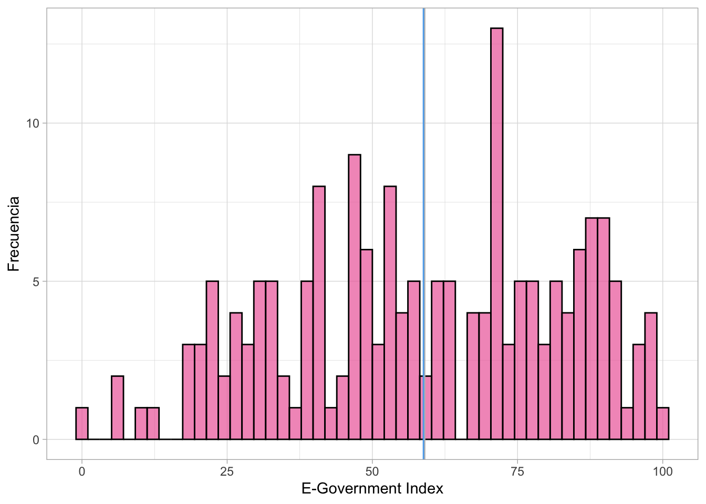
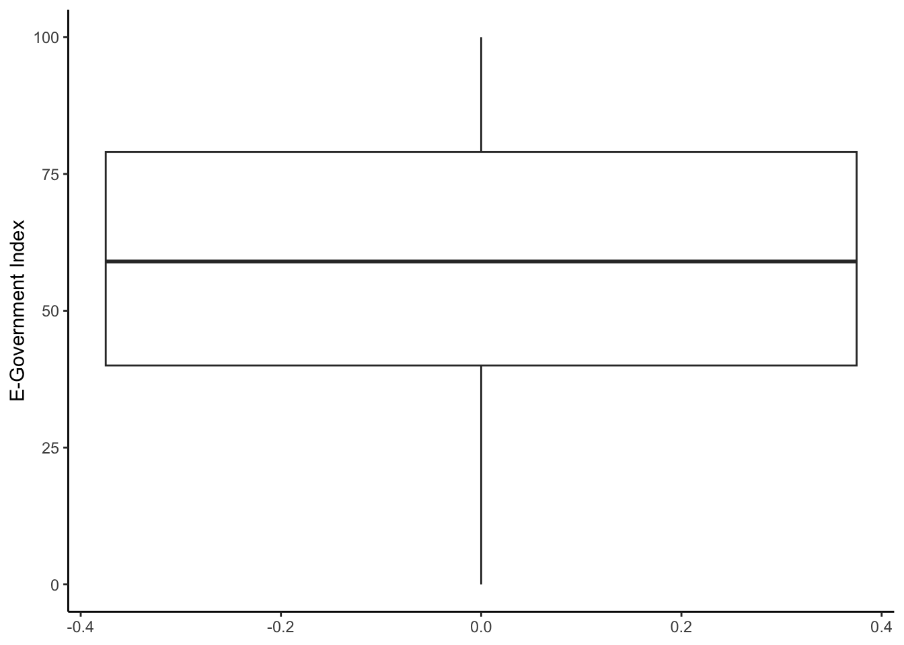

Práctica dirigida 3

FACULTAD DE CIENCIAS SOCIALES - PUCP
Curso: POL 278 - Estadística para el análisis político 1 | Semestre
2024 - 1
Repaso
E-Government Survey 2022: The Future of Digital Government
La Encuesta de las Naciones Unidas sobre Gobierno Electrónico se ha publicado cada dos años por el Departamento de Asuntos Económicos y Sociales de las Naciones Unidas desde 2001. La Encuesta evalúa el estado de desarrollo del gobierno electrónico de todos los Estados miembros de las Naciones Unidas y, durante este tiempo, ha establecido un conjunto de datos y análisis exhaustivos.
La evaluación mide el rendimiento del gobierno electrónico de los países en relación con los demás, en lugar de ser una medición absoluta. Reconoce que cada país debe decidir el nivel y la extensión de sus iniciativas de gobierno electrónico de acuerdo con sus propias prioridades nacionales de desarrollo y para lograr los Objetivos de Desarrollo Sostenible. La Encuesta sirve como una herramienta de referencia y desarrollo para que los países aprendan entre sí, identifiquen áreas de fortaleza y desafíos en el gobierno electrónico y moldeen sus políticas y estrategias. También tiene como objetivo facilitar e informar las discusiones de los órganos intergubernamentales, incluida la Asamblea General de las Naciones Unidas, el Consejo Económico y Social y el Foro Político de Alto Nivel.

Carguemos la data egov2022.xlsx
library(dplyr)#Convocamos el paquete
library(rio)
data=import("egov2022.xlsx") | Nombre | Descripción |
|---|---|
| Pais | Nombre del país |
| E_gov | Indicador de gobernanza digital (0-100) |
| E_part | Transparencia y acceso a la información, participación ciudadana en línea (0 - 100) |
| Online_service | Servicios en línea otorgado por el Estado (0-100) |
| Human_cap | Miembros del Estado especializados en el tema (0-100) |
| Tele_infra | Índice de capacidad de redes de telecomunicaciones como acceso a internet 5G (0-100) |
| Alto_teleinfra | ¿El país tiene un índice de infraestructura mayor a 80? Si/No |
| Region | Continente donde pertenece cada país |
1.Recordando el análisis descriptivo
- Moda: Nominales, ordinales y numéricas
- Mediana: Ordinales y numéricas
- Media: Numéricas
Revisamos la estructura de la base de datos y sus variables
str(data)## 'data.frame': 181 obs. of 8 variables:
## $ Pais : chr "Afghanistan" "Albania" "Algeria" "Andorra" ...
## $ E_gov : num 21 74 54 71 33 59 83 73 96 90 ...
## $ E_part : num 19 76 23 38 17 42 65 58 99 77 ...
## $ Online_service: num 28 82 37 51 47 42 81 72 94 88 ...
## $ Human_cap : num 35 80 70 76 46 81 92 79 100 91 ...
## $ Tele_infra : num 19 60 61 88 20 60 73 69 88 85 ...
## $ Alto_teleinfra: chr "No" "No" "No" "Si" ...
## $ Region : chr "Asia" "Europe" "Africa" "Europe" ...Podemos ver que casi todas las variables son numéricas, excepto la variable Region que se muestra como texto, pero es categórica. Procedemos a revisar sus niveles y a recodificarla.
data %>%
group_by(Region) %>%
summarize(Freq=n())## # A tibble: 5 × 2
## Region Freq
## <chr> <int>
## 1 Africa 52
## 2 Americas 32
## 3 Asia 43
## 4 Europe 40
## 5 Oceania 14data$Region=as.factor(data$Region)
class(data$Region) #Comprobamos## [1] "factor"2. Aplicación en R
¿Cuál es el estado de la gobernanza digital de los países?
- ¿El país tiene un nivel alto de infraestructura en telecomunicaciones? (Alto_teleinfra) : Variable categórica
Realicemos una tabla de frecuencias de la variable:
para_grafico= data %>%
group_by(Alto_teleinfra) %>%
summarise(Freq=n())¿Qué nos indica la tabla? En este caso, ¿cuál sería la moda?
Revisemos en un gráfico:
library(ggplot2)
ggplot(para_grafico, aes(x=Alto_teleinfra, y = Freq, fill=Alto_teleinfra))+
geom_bar(stat = "identity")+ xlab("Alto nivel de infraestructura en telecomunicaciones")+ylab("Frecuencia")- E-Government Index: Variable numérica
Revisamos solo la media del E_gov
data %>%
summarise(media=mean(E_gov))## media
## 1 58.79558Ahora realizamos análisis descriptivo y de dispersión. ¿Qué podemos comentar de los datos obtenidos?
data %>%
summarise(Mínimo=min(E_gov),
Mediana= median(E_gov),
Desviación=sd(E_gov),
Media= mean(E_gov),
Máximo= max(E_gov))## Mínimo Mediana Desviación Media Máximo
## 1 0 59 23.98373 58.79558 100¿Cuál es el puntaje más bajo y el máximo?
¿Cuál es el rango? (max-min)
Desviación estándar (sd): La desviación estándar es una medida que nos ayuda a entender cuánto se separan los números en un conjunto de datos del valor promedio o medio. Podemos traducir ello como una forma de medir cuánto “se dispersan” los números alrededor de un número central.
¿Hay mucha variabilidad en los datos? sd
Visualización
Histograma de E-Gov
data %>%
ggplot(aes(x=E_gov))+
geom_histogram(fill = "blue",
color = "black",
bins = 30,
alpha = 0.7)+
xlab("E-Government Index") +
ylab("Frecuencia")+
theme_minimal()
Histograma de E-Gov + mediana (rojo) + media (verde)
data %>%
ggplot(aes(x=E_gov))+
geom_histogram(fill = "blue",
color = "black",
bins = 30,
alpha = 0.7)+
geom_vline(xintercept = median(data$E_gov), color = "red")+
geom_vline(xintercept = mean(data$E_gov), color = "green")+
xlab("E-Government Index") +
ylab("Frecuencia")+
theme_light()
Cuartiles y diagrama de cajas
data %>%
summarise(CuartilesEgov = quantile(E_gov))## CuartilesEgov
## 1 0
## 2 40
## 3 59
## 4 79
## 5 100¿Cómo ubicamos los cuartiles en el diagrama de cajas?
data %>%
ggplot(aes(y=E_gov))+
geom_boxplot()+
ylab("E-Government Index")
Según región, ¿cuál es el estado de la gobernanza digital de los países?
¿Cuál es la importancia de analizar por regiones?
data %>%
group_by(Region) %>%
summarize(Media=mean(E_gov)) ## # A tibble: 5 × 2
## Region Media
## <fct> <dbl>
## 1 Africa 36.3
## 2 Americas 62.6
## 3 Asia 63.2
## 4 Europe 84.2
## 5 Oceania 47.7data %>%
ggplot(aes(x=E_gov))+
geom_histogram()+
facet_wrap(~Region)+
xlab("E-Gov Index")+
ylab("Frecuencia")
Analicemos los resultados üòº
Descriptivos por región
data %>%
group_by(Region)%>%
summarise(Mínimo=min(E_gov),
Mediana= median(E_gov),
Desviación=sd(E_gov),
Media= mean(E_gov),
Máximo= max(E_gov))## # A tibble: 5 × 6
## Region Mínimo Mediana Desviación Media Máximo
## <fct> <dbl> <dbl> <dbl> <dbl> <dbl>
## 1 Africa 0 35 17.3 36.3 73
## 2 Americas 18 62.5 15.5 62.6 86
## 3 Asia 21 67 19.3 63.2 93
## 4 Europe 61 86 9.35 84.2 100
## 5 Oceania 27 40.5 22.6 47.7 97Comparo los resultados y los ubico en mi diagrama de cajas
data %>%
ggplot(aes(x=Region, y=E_gov, color=Region)) +
geom_boxplot() +
geom_jitter(shape=16, position=position_jitter(0.2)) +#para agregar los casos como puntos
theme_classic()
Si deseo un subset solamente de los países que están por encima de la media ¿cuántos países son?
MayorMedia=data %>%
filter(E_gov > mean(E_gov)) Si queremos ver solo una región, en este caso África
data %>%
filter(Region =="Africa") %>%
summarise(mean(E_gov))## mean(E_gov)
## 1 36.28846O los estadísticos de los países de Asia
data %>%
filter(Region == "Asia") %>%
summarise(Mínimo=min(E_gov),
Mediana= median(E_gov),
Desviación=sd(E_gov),
Media= mean(E_gov),
Máximo= max(E_gov))## Mínimo Mediana Desviación Media Máximo
## 1 21 67 19.31929 63.16279 933. Ejercicios üëæ :
- Realizar los estadísticos descriptivos del Online Service Index (Online_Service).
- Realizar una muestra de aquellos paises que están por encima de la media del índice de infraestructura y telecomunicaciones.
- Realizar diagrama de cajas del E-Participation Index (E_part) por región.